The full sky in the ultraviolet
This is the whole sky in ultraviolet light — the first detailed version with no holes in it. Most of it was photographed by NASA’s GALEX space telescope between 2003 and 2013; the parts no ultraviolet telescope ever saw were filled in by a statistical model, and every such pixel is labelled. The top of this page is for anyone curious about the sky; the bottom is for astronomers who want the numbers, the files and the paper.
For everyone
What ultraviolet shows, 6 places to start, who made it.
1 · The sky in ultraviolet
Ultraviolet, the light just beyond violet, can only be photographed from space. It picks out the hottest things in our Galaxy: young massive stars, the embers of old ones, and thin dust clouds lit by them like fog around a streetlamp. The Milky Way, the bright band of the visible sky, goes dark — dust absorbs ultraviolet even more than visible light — while nearby star-forming regions above and below it glow: Orion, Scorpius, the Magellanic Clouds. The ultraviolet sky is close to a negative of the familiar one.
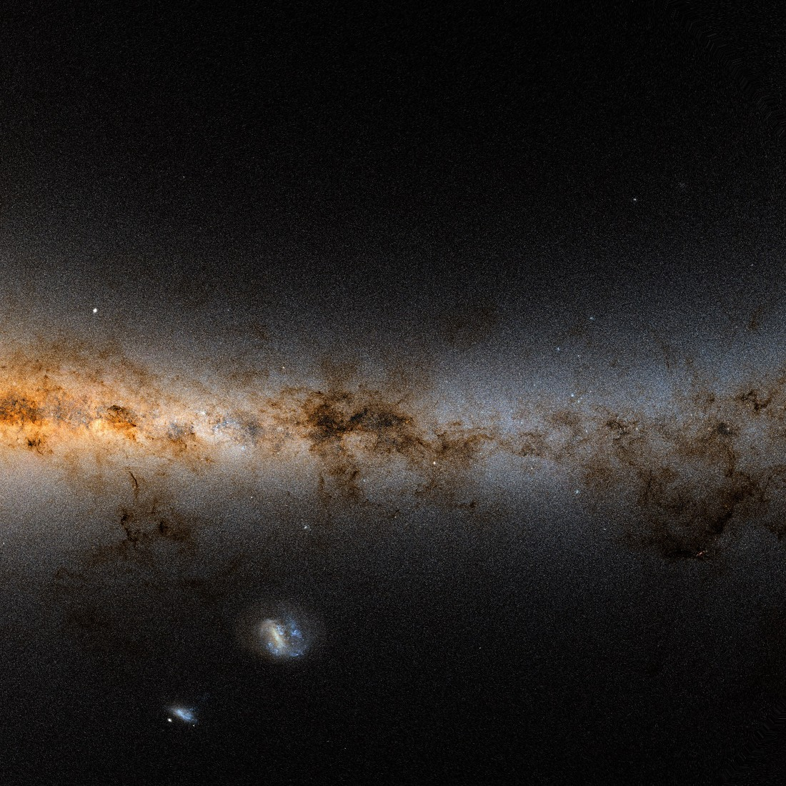
visible · Gaia DR3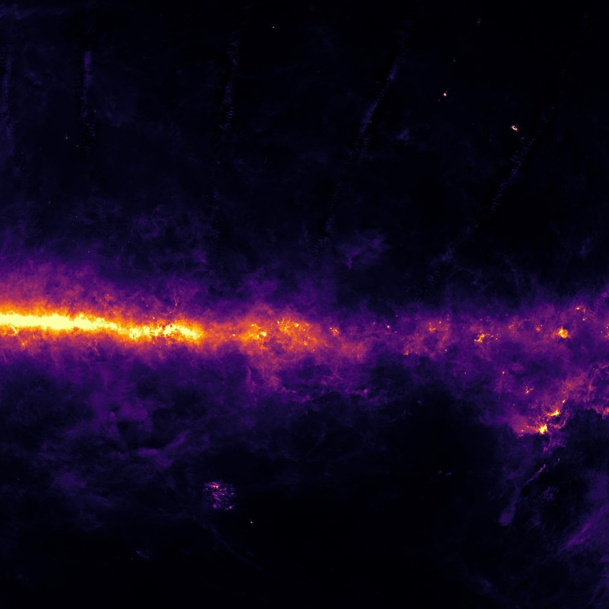
infrared · 12 µm dust · WISE (WSSA)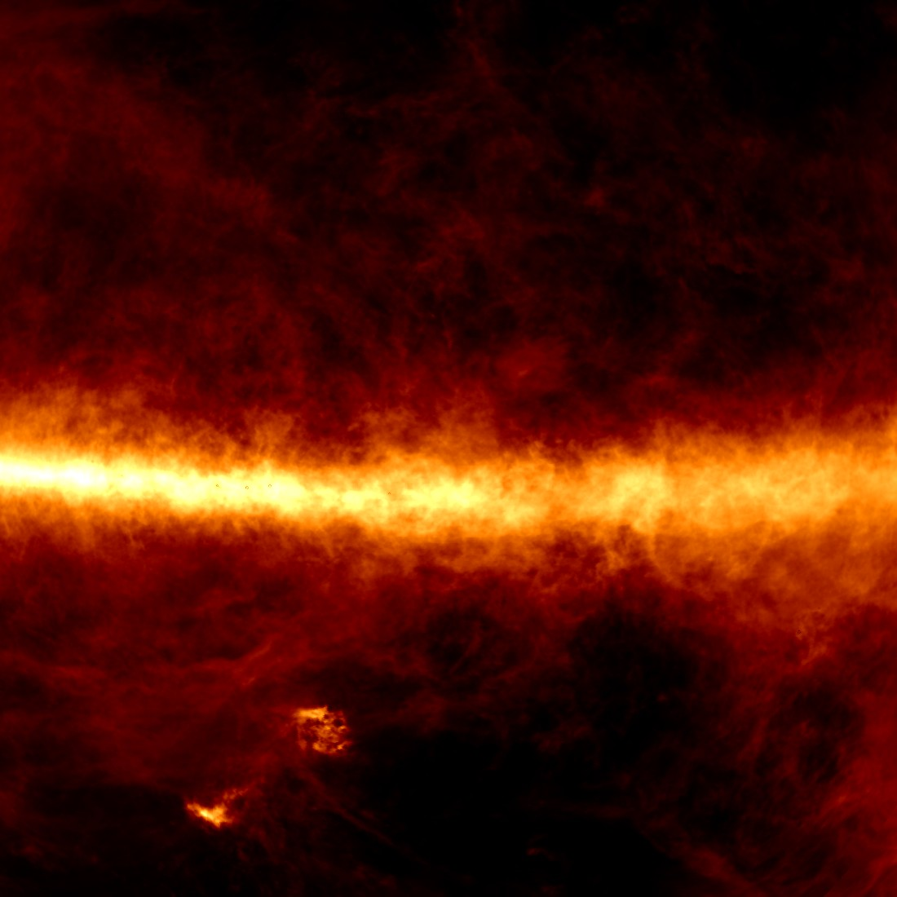
radio · 21 cm hydrogen gas · HI4PI6 places to start, each a close-up from the map.
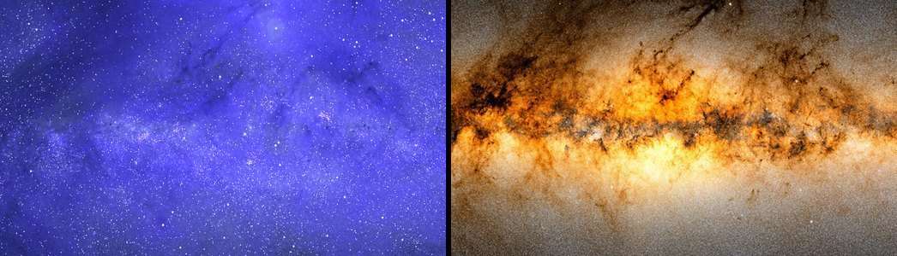
The centre of the Galaxy, ultraviolet vs visibleThe brightest part of the visible sky; in ultraviolet it is among the darkest.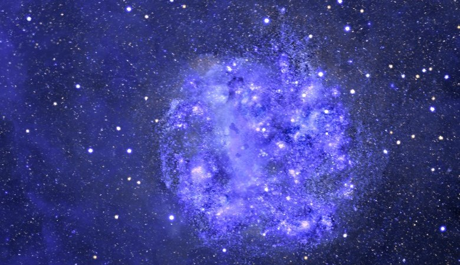
The Large Magellanic Cloud, a whole galaxy forming starsAt full resolution the star nursery 30 Doradus and the galaxy’s bar resolve. In the map’s provenance layer, most of the Cloud’s far-UV is translated from near-UV images (green), with a small directly imaged core (orange, Swift).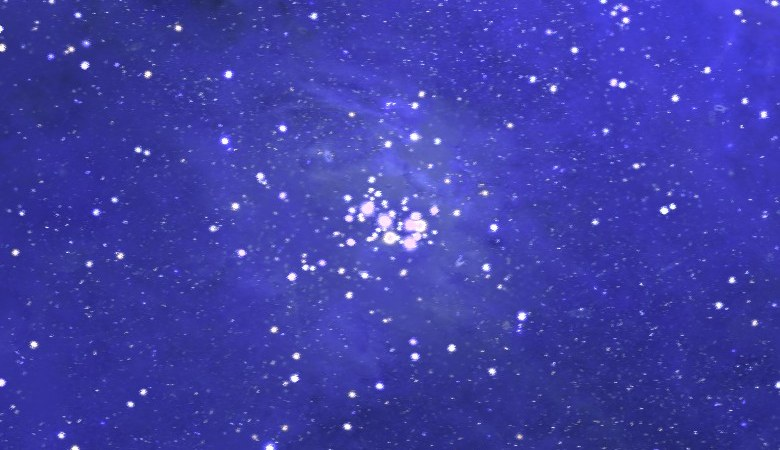
A familiar object: the PleiadesA young star cluster bright in both bands, with faintly lit dust around it, at Galactic coordinates l 166.6°, b −23.5°.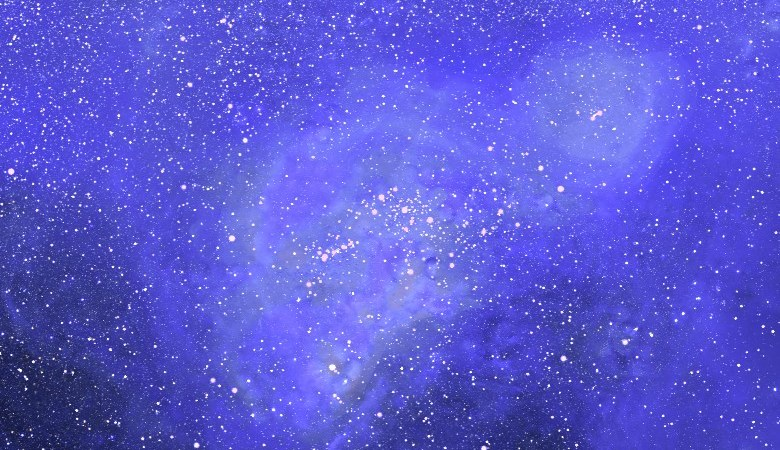
Orion and its neighbourhoodModest in visible light, rich in ultraviolet: young massive stars and the clouds they light up. The map’s uncertainty layer marks the circles where GALEX avoided the brightest stars.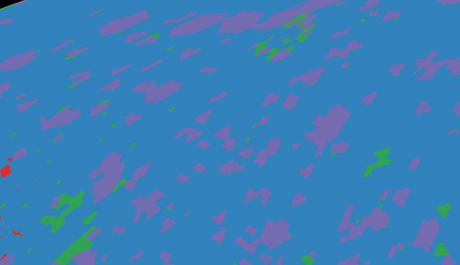
Is this pixel a photograph?The provenance layer far from the Milky Way: GALEX snapshots (blue) with model-filled gaps (purple, red) between them — the check to make before trusting a faint feature.No new photon was collected for this map: every measurement comes from earlier space missions and surveys, credited at the end of the page. Many AI agents working in Claude Science did the labour of putting them together; I guided them over a few weeks with short instructions and a lot of looking at pictures.
For astronomers
Why the map was missing, how it was made, how far to trust it; the specification and the paper.
2 · Why no complete ultraviolet map existed
Almost all deep, wide-area ultraviolet imaging comes from 1 mission, GALEX (2003–2013), which could not look everywhere: about 38,000 snapshots of 1.2° covering 64% of the sky in the far-UV, 76% in the near-UV; detector safety kept it away from ultraviolet-bright stars and the Galactic plane, and after 2009 it observed in the near-UV only. No comparable ultraviolet survey has flown since.
Why the ultraviolet sky matters, as a signal and as a foreground
The far-UV radiation field sets the heating and chemistry of the diffuse interstellar medium; dust-scattered starlight constrains the grains; diffuse ultraviolet maps are cross-correlated with galaxy catalogues; and the wide-field missions now planned (ULTRASAT, UVEX and others) need realistic all-sky brightness estimates.
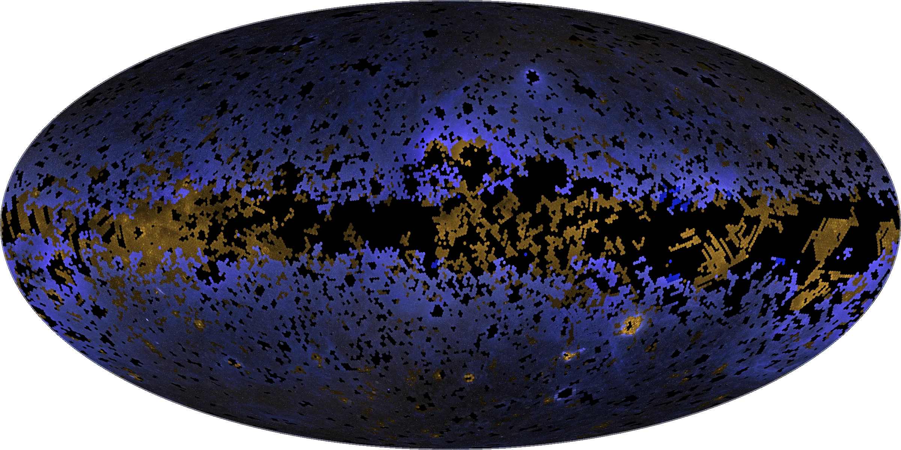
Other instruments saw pieces of what GALEX skipped: Swift’s UVOT in small patches, the Korean FIMS/SPEAR spectro-imager in coarse (roughly 1°) far-UV maps that include the plane, the 1970s European satellite TD-1 for 31,000 bright stars. This map puts them on 1 brightness scale, fills what remains, and says pixel by pixel which is which.
3 · How the map was made
A single rule organises the build: a measured pixel always wins, a coarser or translated measurement beats a prediction, and whatever fills the rest is labelled. The build follows that priority, in 4 stages:
- Clean the GALEX mosaic: remove each snapshot’s faint foreground (airglow, zodiacal light), then solve 1 background level per snapshot for all 38,000 at once, so that overlapping snapshots agree.
- Add the other ultraviolet data on the GALEX brightness scale: Swift-UVOT imaging, the FIMS/SPEAR far-UV level where GALEX never looked, TD-1 fluxes for the stars GALEX saturated on, and far-UV translated from near-UV-only imaging.
- Predict what is still missing (28% of the far-UV sky, most of it already levelled by FIMS/SPEAR, and 27% of the near-UV): a regression trained on the observed sky predicts the diffuse ultraviolet from all-sky maps of Planck dust, Hα and Gaia starlight; the ultraviolet light of 119 million Gaia stars is then added one by one.
- Blend and label: the layers are feathered together with per-pixel weights that sum to 1, published as each pixel’s provenance with a calibrated 1σ uncertainty. Nothing measured is overwritten.
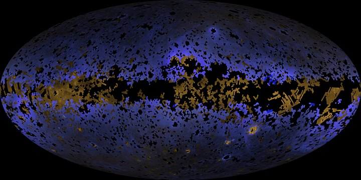
step 0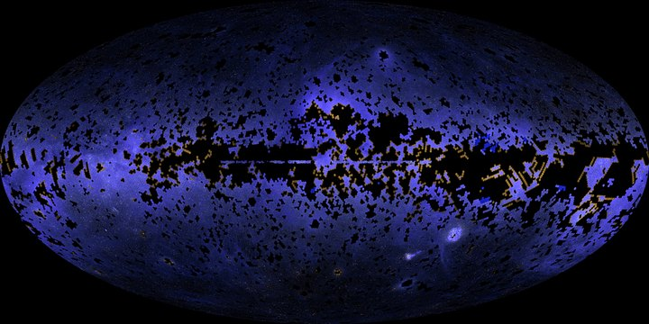
step 4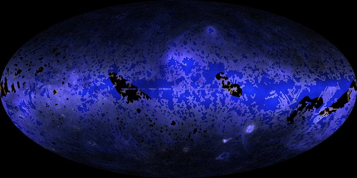
step 5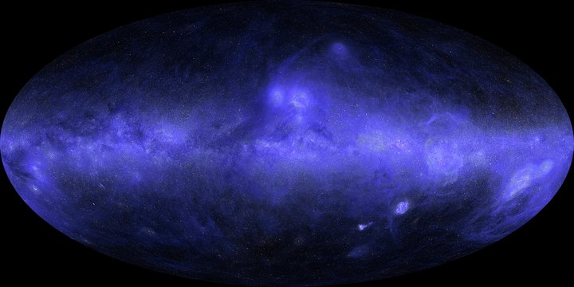
step 7: the finished map− 1 residual background per pointing (the disc fix)
+ Swift-UVOT deep fields
+ far-UV = GALEX near-UV image × learned colour
degree-scale, including the Galactic plane
Planck dust, Hα, H I, Gaia starlight
+ 119 million Gaia DR3 stars with
measured or predicted UV fluxes
What “filled by a model” does and does not mean
The model is an ordinary statistical regression (an ensemble of small decision trees), not a language model and not an image generator: it puts clouds where the dust and the stars say they should be, not where they merely look plausible. It is good for the overall shape and brightness of the ultraviolet sky. It cannot contain a surprise: no new star or galaxy can be discovered in a filled region, because no telescope looked there.
Inputs and cleaning of the GALEX mosaic
GALEX GR6/7, ≈38,000 tiles of 1.2° (the mosaic served by CDS). First, per 14′ cell, the airglow (from the Earth’s upper atmosphere) + zodiacal (sunlight scattered by Solar-System dust) offset is measured against the UV-BKGD diffuse-background maps (Murthy 2014), which set the zero point, and subtracted. Then 1 background offset + 1 edge-rim term per tile, solved jointly from neighbour differences for all tiles at once (sparse least squares); later passes re-level outlier tiles and model the scattered light of avoided bright stars (a smooth per-star model, trimmed beyond 2° from each of the 30 far-UV / 74 near-UV treated stars). Residual blemishes that no catalogued object explains have their GALEX weight tapered to 0; pixel values are never edited. Flux lost on saturated bright stars is restored from TD-1.
The other ultraviolet layers
Swift-UVOT imaging, cross-calibrated to GALEX units by a monotone fit on 0.7–0.9 million overlap pixels per filter (0.2% of the sky). FIMS/SPEAR far-UV spectro-imaging sets the degree-scale far-UV level over the 24% of the far-UV sky where GALEX never looked, including the Galactic plane; finer structure there is predicted. Where GALEX imaged the near-UV only (11.9% of the sky; this layer is the dominant one over 9.7%), far-UV = star-subtracted near-UV × a learned diffuse colour, plus catalogue stars — its shapes are recorded, its far-UV intensity is inferred, so far-UV/near-UV colours cannot be taken from it. TD-1 and GUVcat supply measured stellar fluxes.
The prediction, the stellar layer, the fusion and the flags
Diffuse component: a gradient-boosted regression on 90 features — Planck dust (E(B−V), radiance, τ353), Hα, Gaia blue/red integrated starlight and source density, each smoothed at 0.5°–16°, plus gradients and jittered sky position — trained on the star-subtracted GALEX sky at 7′ with 6-fold spatial cross-validation. Effective resolution 0.5°–1°: structure below that scale in predicted sky is not real.
Resolved sources: 118.9 million Gaia DR3 stars with measured (TD-1, GUVcat) or model-predicted UV fluxes, 160,099 extragalactic point sources, 14,283 galaxies and 146 globular clusters, rendered with the map PSF; complete to G ≈ 17 in filled sky.
Fusion: every layer gain-matched to GALEX on 1°–15° scales, the far-UV prediction tied to FIMS/SPEAR more than 2° from GALEX, then priority-nested feathering GALEX > NUV-informed > Swift-UVOT > FIMS-constrained > prediction, weights summing to 1 per pixel.
Flags: the 5-column weights file (W_GALEX, W_NUVX, W_UVOT, W_FIMS, W_MODEL) is the provenance mixture; a 1-byte provenance code per pixel (0 GALEX, 1 NUV-informed far-UV, 2 UVOT, 3 FIMS-constrained, 4 prediction + stars) is its argmax; “data-only” variants keep pixels with W_GALEX + W_NUVX + W_UVOT ≥ 0.5 (and a strict far-UV variant without the NUV-informed layer). The uncertainty file gives, at nside 512, SIGMA (68% half-width of log10 I, statistical) and SIGMA_SYS (a correlated level systematic: 0.10 dex where FIMS/SPEAR sets the plane level, 0.05 dex where Swift dominates), calibrated on held-out residuals as a function of pixel class, distance from data and dust column (held-out coverage 0.68).
It did not come out right the first time: in the faintest fields the footprints of individual snapshots showed as faint circles at slightly different levels. Automated review missed them twice; a person looking at the picture did not. The joint background solve of the cleaning stage is the fix. The map was rebuilt 16 times in all, each time with its own validation report.

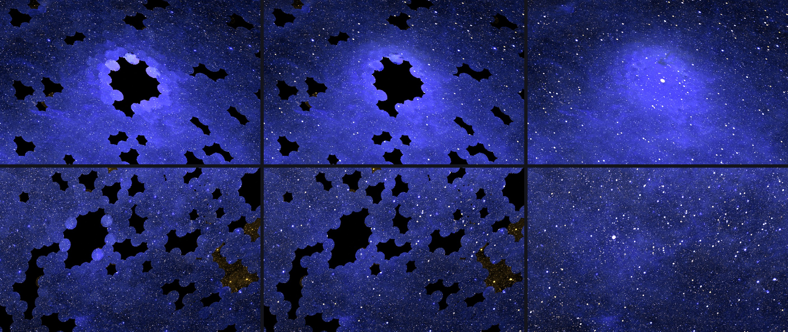
4 · How far to trust it
A complete map owes the reader 2 answers per pixel: was it measured, and how good is it. The provenance weights give the first. For the second, the prediction was tested by hiding patches of real GALEX sky and predicting them back: the typical error of filled sky is about 12–14% (0.05–0.06 dex), against ≈5% for the photographed sky, growing with distance from data.

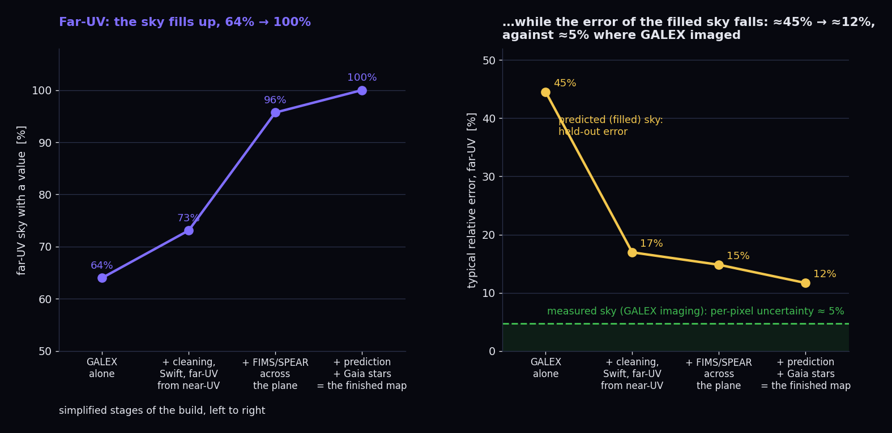
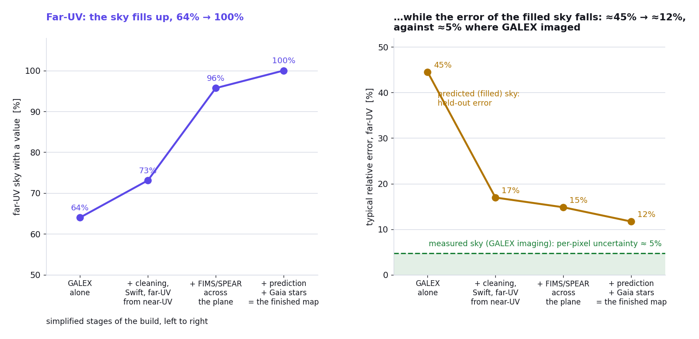
Filled sky cannot hold a discovery and, being built from dust maps, is not an independent dust tracer. 2 more cautions: scattered light around the brightest avoided stars is modelled, not measured, and nothing here has been peer-reviewed by humans yet — the validation reports come from the same system that built the map.
Photometric checks (numbers from the technical paper)
GALEX imaging is reproduced to 0.003 dex. Gap-matched, spatially held-out scatter of the diffuse prediction: 0.047 / 0.057 dex (far-UV / near-UV; 0.052 / 0.058 dex for prediction + stars against the total sky), rising to ≈0.08 dex several degrees from data. Where GALEX never observed, the maps agree with FIMS/SPEAR and Swift-UVOT to ≈0.2 dex — their noise, not an independent accuracy. Seams at GALEX coverage edges ≈1%. The tile equalisation removes 60% / 77% (far-UV / near-UV) of the excess tile-edge step and leaves the isotropic level, the degree-scale sky and point-source photometry unchanged. Isolated UVOT point sources are half recovered at UVM2 ≈ 19.3. Absolute zero point: inherited from UV-BKGD (Murthy 2014), systematic ≲100 CU, not re-derived.
Known artefacts and caveats — read before measuring
- Complete is not measured. In predicted sky (provenance 3–4) the sub-degree morphology is template-predicted: do not search for sources there, and do not use it as an independent dust tracer. For real photons only, mask on the weights or use the data-only files.
- The 1.7′ pixel is a sampling, not a resolution: across ≈24% of the far-UV sky the ultraviolet constraint is degree-scale (FIMS/SPEAR).
- Stars are flux in the map, not a catalogue (a resolved-source / diffuse partition is provided); predicted stellar fluxes are indicative only. The Magellanic Clouds and the brightest stars are special-cased and excluded from quantitative use.
- Residual per-tile discs at the few-% level may remain in the faintest GALEX fields; scattered light within ≈2° of very bright stars is modelled, not measured: treat faint rings around bright-star holes with suspicion.
- Uncertainty tails are heavy: use 2.5 × SIGMA for 95.4%. SIGMA_SYS is correlated and must not be added in quadrature per pixel.
- A far-UV-only high-latitude excess and the far-UV–Hα slope are discussed in the paper, not corrected.
5 · Technical summary
At a glance:
- Date of this map: September 16, 2026.
- Bands: far-UV 1350–1750 Å (λeff 1539 Å), near-UV 1750–2800 Å (λeff 2316 Å).
- Grid: HEALPix NESTED, Galactic, nside 2048 (≈50 million 1.7′ pixels per band); lighter copies at nside 512.
- Unit: photons cm⁻² s⁻¹ sr⁻¹ Å⁻¹ (CU); 1 CU = 1.29 × 10⁻¹¹ (far-UV) / 8.58 × 10⁻¹² (near-UV) erg cm⁻² s⁻¹ sr⁻¹ Å⁻¹. Intensities as observed (not extinction-corrected); airglow and zodiacal light removed.
- Resolution: pixel-limited (1.7′) where imaged; 0.5°–1° effective where predicted; degree-scale level where only FIMS/SPEAR constrains the far-UV.
- Typical 1σ: ≈0.02 dex (≈5%) where GALEX imaged; ≈0.07 dex median where it did not, largest in the inner plane; heavy tails (95.4% within 2.5σ).
- All-sky images on this page: Mollweide equal-area projection, Galactic coordinates, Galactic Centre in the middle, l increasing to the left.
6 · Downloads
Download links for the maps (FITS and HiPS) and their documentation will be added to this page.
7 · Technical paper
8 · Citing and credit
If you use the maps, please cite the technical paper above as Ménard, B. (2026), Full-sky ultraviolet maps from harmonised GALEX, Swift-UVOT, FIMS/SPEAR, TD-1 and Gaia data, in preparation; map and data: menard.pha.jhu.edu/uvmap — together with Murthy (2014, ApJS 213, 32) for the zero point, and credit the surveys that made every measurement (listed in the Acknowledgements below).
- Author: Brice Ménard.
- Licence: CC BY 4.0 for the data products, MIT for the code.
- Complete is not the same as measured: please carry the provenance and uncertainty layers with any figure made from filled sky.
Acknowledgements
Every measurement came from GALEX and Swift (NASA), FIMS/SPEAR (Korea), TD-1 (Europe), Planck and Gaia (ESA), and from the people who built those missions and made the data public. The many agents working in Claude Science contributed the patient labour of putting it together. My contribution was limited to guiding them in the process.